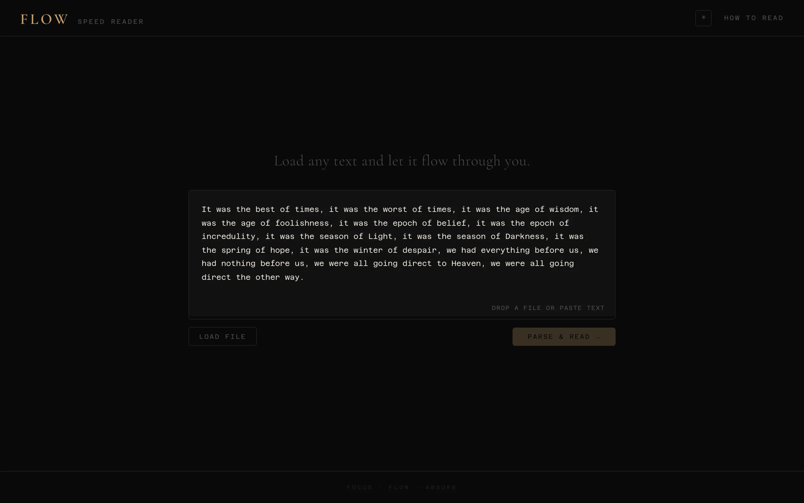

Rapid Serial Visual Presentation (RSVP) is a reading technique where individual words flash one at a time at a fixed position on screen. Because your eyes stay in one place, the biggest bottleneck in normal reading, saccadic eye movement across lines of text, is eliminated. RSVP readers can comfortably reach 500-800 WPM, which is several times faster than typical reading speed.
I tried several existing RSVP apps and found the same issue with all of them: they start at the target speed immediately. The first sentence of whatever you're reading blows past before your brain has engaged with the material. By the time you've adjusted, you've missed the opening context that the rest of the text builds on. Flow was built to solve this specific problem.
The speed ramp
Flow starts playback at 120 WPM and accelerates to the target speed (user-configurable, default 650 WPM) over approximately the first 80 words of the text. The acceleration follows a cubic ease-in curve, which means the speed increase is very gradual at first and steepens toward the end. The ramp is capped at 60% of the total text length so that very short passages don't spend their entire duration accelerating.
I tested several curve shapes. Linear acceleration felt abrupt. Quadratic was better but still had a noticeable transition point. Cubic ease-in produced the smoothest perceptual result. During the ramp, most readers don't consciously notice the speed changing; they just find themselves reading faster. That was the goal.
The practical effect is that the opening of a text, where the author establishes setting, context, or an argument's premise, plays at a comfortable speed. By the time the text transitions to the body of the content, the reader is at full speed and already in a reading rhythm.
Optical pivot
Each English word has a natural fixation point, typically around one-third of the way from the left edge. If you track eye movements during reading, the initial fixation lands near this point for most words. Flow identifies this letter in each word, highlights it in amber, and positions it at a fixed horizontal coordinate on screen.

{kind=link}
This means that regardless of word length, the reader's focus point is always in the same place. A three-letter word and a twelve-letter word both have their pivot letter at the same screen position. The highlighting gives an additional visual anchor within each flash, reducing the time needed to locate and process the relevant part of the word.
File parsing

{kind=link}
I wanted Flow to work with actual ebook libraries, not just pasted text. It reads EPUB, MOBI, AZW, AZW3, FB2, PDF, DOCX, RTF, Markdown, HTML, and plain text files. All parsing happens in the browser; no data is uploaded to any server.
EPUB and DOCX files are ZIP archives containing XML. JSZip opens them and the relevant content files are extracted and parsed. PDFs go through pdf.js for text extraction. The more involved formats are MOBI and AZW. These Amazon Kindle formats use PalmDOC compression (a variant of LZ77), and I had to write a JavaScript decompression routine to handle them. FB2 is an XML-based format common in Russian ebook distribution; parsing it is just XML extraction.
After extraction, a cleanup pipeline strips artifacts: URLs, Markdown syntax characters, HTML tags, excessive whitespace, repeated punctuation. The goal is to deliver clean prose to the reader, without markup noise showing up as flashed words.
Implementation details
Flow is built with React 18 and Vite. The timing engine is a custom hook called useSpeedReader that manages the interval timer, computes the current speed from the ramp curve, tracks position, and handles pause/resume state. It was important to separate timing from rendering because React's render cycle introduces variable delays, and at 600+ WPM the interval between words is around 100ms. Timing jitter of even 20-30ms is perceptible as an uneven reading rhythm.
The UI includes a progress bar that doubles as a seek control (click or drag to jump to any position in the text), an editable WPM field that accepts values from 100 to 1200, a real-time display of the current WPM during the ramp phase, and play/pause/reset controls. Light and dark themes are available and persist across sessions via localStorage.